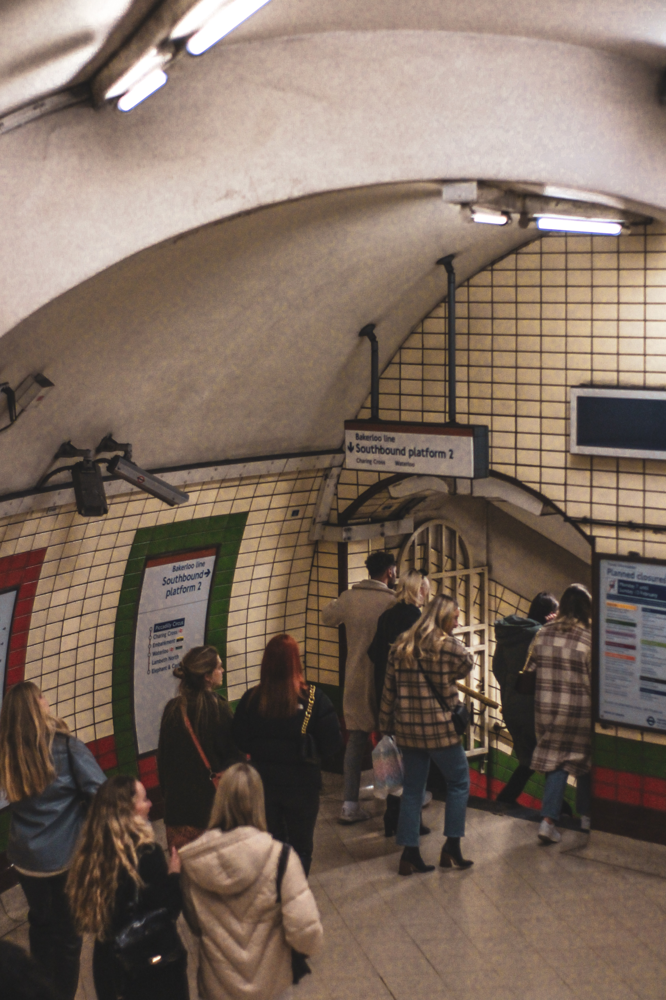
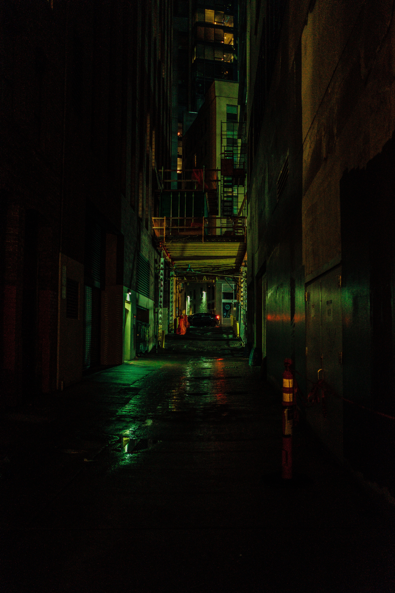
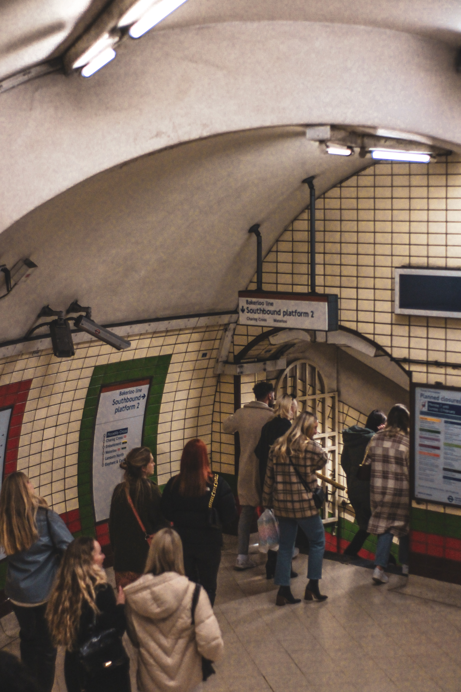
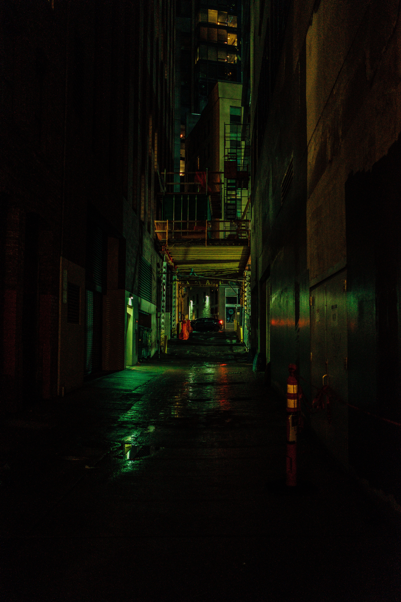
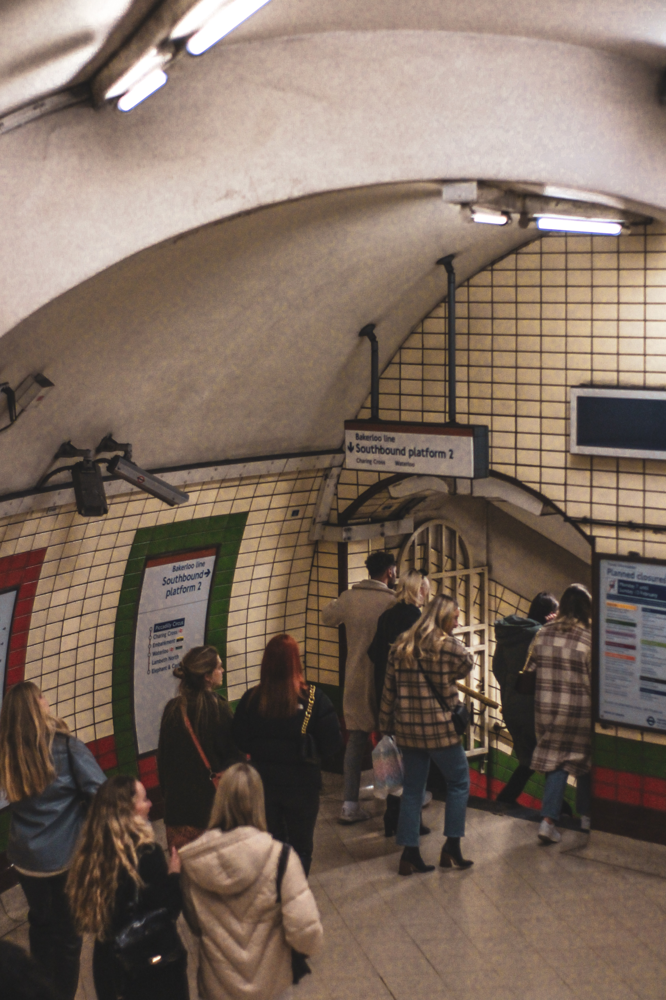
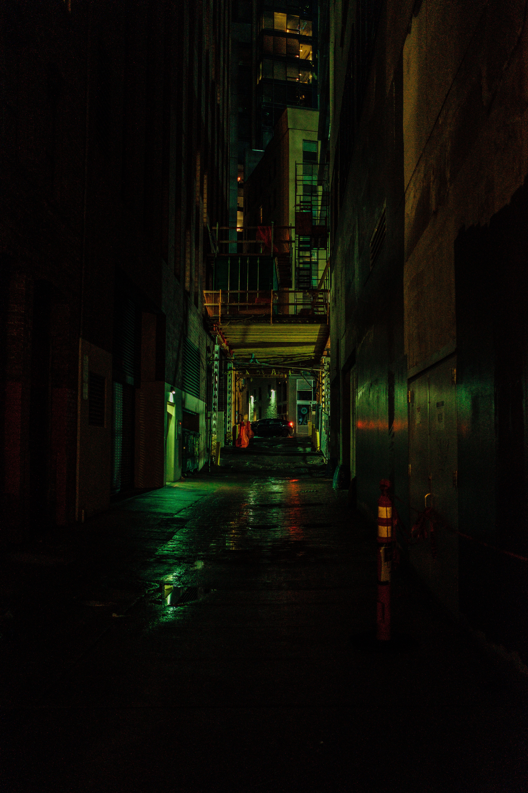

Como parte de mi experiencia personal y gusto estético, he seleccionado cuidadosamente las imágenes que se presentan en esta página.
Cada una de ellas evoca una serie de emociones y transmite mensajes particulares que resonaron conmigo de manera significativa.
La elección de estas imágenes no solo se basa en su aspecto visual atractivo, sino también en el significado simbólico que encierran.
Cada imagen representa algo especial para mí y refleja una parte de mi personalidad y mis intereses.

